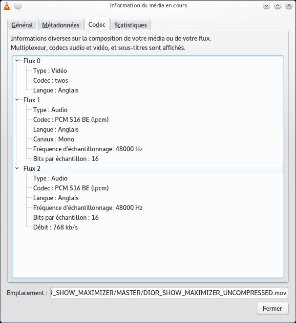

Encodage de video¶
on utilise l’utilitaire en ligne de commandes avconv pour encoder tout types de videos et audio
syntaxe générale¶
avconv -i IN.mov ..*options*.. OUT.mov
avconv -i VIDEOIN.mov -i AUDIOIN.mov ..*options*.. OUT.mov
avconv -i images.%d.tga ..*options*.. OUT.mov
les combinaisons sont multiples.
YOUTUBE - VIMEO¶
https://trac.ffmpeg.org/wiki/Encode/YouTube
https://trac.ffmpeg.org/wiki/EncodingForStreamingSites
https://www.virag.si/2015/06/encoding-videos-for-youtube-with-ffmpeg/
http://www.joyofdata.de/blog/hd-clips-with-ffmpeg-for-youtube-and-vimeo/
https://hetzel.net/2014-01-29/youtube-videos-will-process-faster-encode-streamable-file-format/
https://sites.google.com/a/webmproject.org/wiki/ffmpeg/vp9-encoding-guide
avconv -r 25 -thread_queue_size 512 -i compo.%04d.png -i sound.wav -c:v libx264 -preset slow -crf 15 -pix_fmt yuv420p -strict -2 out.mkv
ffmpeg -i compo.%04d.jpg -codec:v libx264 -crf 21 -bf 2 -flags +cgop -pix_fmt yuv420p -codec:a aac -strict -2 -b:a 384k -r:a 48000 -movflags faststart compo.mp4
avconv -i compo.%04d.jpg -r 25 -vcodec libx264 -profile:v high -b 5000k compo.mov
avconv -i compo.%04d.jpg -r 25 -vcodec libx264 -preset slow -crf 18 -pix_fmt yuv420p compo.mov
a partir d’un master Flame¶
la source est un fichier master .mov non compressé exporté a partir du flame : MASTER.mov . le son est inclu dans le fichier .mov et consiste en géneral en deux flux mono encodé avec le codec audio PCM S16 BE (lpcm) en 16bits a 48000Hz.le codec video “twos” correspond a de la video “raw” , donc non compressé.La taille de ces fichiers est en general assez importante (plusieurs Gigas).
{kind=link}
H264¶
conversion en H264 de qualité
avconv -i MASTER.mov -c:v libx264 -qscale 1 -an MASTER_H264_NOSOUND.mov
avconv -i MASTER.mov -c:v libx264 -qscale 1 -filter_complex "[0:a:0][0:a:1]join=inputs=2" MASTER_H264.mov
- l’option -an permet de supprimer le traitement du son.
- l’option -filter_complex “[0:a:0][0:a:1]join=inputs=2” permet de recombiner les deux canaux mono en un seul flux stereo.
- l’option -c:v libx264 précise d’utiliser le codec h264 (ie la librairie libx264)
- l’option -qscale 1 précise d’encoder en qualité maximale (-qscale 5 donnerait une qualité trés basse par exemple)
plus d’options
- -r framerate : -r 24 encodera a 24 images par secondes.par défaut le framerate utilisé est celui du fichier d’entrée.
PRORES¶
pour encoder en prores hq
avconv -i MASTER.mov -c:v prores -profile:v hq -an MASTER_PRORESHQ_NOSOUND.mov
avconv -i MASTER.mov -c:v prores -profile:v hq -filter_complex "[0:a:0][0:a:1]join=inputs=2" MASTER_PRORESHQ.mov
- l’option -an permet de supprimer le traitement du son.
- l’option -filter_complex “[0:a:0][0:a:1]join=inputs=2” permet de recombiner les deux canaux mono en un seul flux stereo.
- l’option -c:v prores précise d’utiliser le codec prores
- l’option -profile:v hq précise d’encoder en utilisant le profil hq de la librairie prores.il existe 4 profils proxy,lt,standard,hq . -profile:v lt fournira un prores lt (de moins bonne qualité).le profil 4444 n’est pas fourni encore pour l’instant.
Ubuntu 15.10 ou 16.04 :¶
avconv -i MASTER.mov -c:v prores -profile:v 3 MASTER_PRORESHQ.mov
decalage son :¶
avconv -r 25 -thread_queue_size 512 -i compo.%04d.png -itsoffset 2 -i sound.wav -map 0:v -map 1:a -c:v prores -profile:v 3 -strict -2 out.mov
https://trac.ffmpeg.org/wiki/Encode/VFX
There are 4 profiles that exist within Prores: Proxy, LT, SQ and HQ (and then optionally 4444). In ffmpeg these profiles are assigned numbers (0 is Proxy and 3 is HQ). See Apple’s official Prores whitepaper for details on the codec and information associated with the profiles. The other option that is used with prores is the -pix_fmt option. This is normally set to yuv422p10le or something like that, but if you want to use the 4444 prores you would set it to yuva444p10le. (A list of possible pixel formats can be invoked by running ffmpeg -pix_fmts. Note that not all of these formats are actually supported with prores).
LOGO¶
incrustation du logo lamaison sur un MASTER prores
avconv -i MASTER_PRORES.mov -vf "movie=/shared/watermark/lamaison_blanc_HD.png[watermark];[in][watermark] overlay=0:0 [out]" MASTER_LOGO.mov
- l’option -vf “movie=/shared/watermark/lamaison_blanc.png[watermark];[in][watermark] overlay=0:0 [out]” permet de faire un overlay de l’image /shared/watermark/lamaison_blanc.png sur le fichier d’entrée . Le logo lamaison existe en plusieures declinaisons HD dans /shared/watermark/.Les images doivent ètre en .png avec un masque.
DNX_HD¶

avconv -i MASTER.mov -vcodec dnxhd -b 120M MASTER_DNXHD.mov
- l’option -vcodec dnxhd -b 120M précise d’utiliser le codec dnxhd 120
- http://www.videoeffectsprod.com/2012/05/le-format-avid-le-dnxhd.html
SEQ TARGA¶
Si le master se présente sous forme d’une séquence d’images Targa on utilisera le format image 2.le fichier son doit ètre fourni séparément par exemple : soundok.wav
avconv -i /seqtarga/ima.%d.tga -i soundok.wav -r 25 -c:v libx264 -qscale 1 MASTER_H264.mov
avconv -i /seqtarga/ima.%04d.tga -i soundok.wav -r 25 -c:v libx264 -qscale 1 MASTER_H264.mov
avconv -i /seqtarga/ima.%d.tga -i soundok.wav -r 25 -c:v prores -profile:v hq MASTER_PRORES.mov
avconv -i /seqtarga/ima.%04d.tga -i soundok.wav -r 25 -c:v prores -profile:v hq MASTER_PRORES.mov
- ima.%d.tga correspond a pas de zero padding : ima.1.tga,ima.2.tga, etc...
- ima.%04d.tga correspond a un zero padding de 4 : ima.0001.tga,ima.0002.tga, etc...
- ne pas oublier de préciser le framerate (-r framerate) . le défaut est 25 images/sec
- la séquence d’image doit commencer a 1 si ce n’est pas le cas il faut renuméroter dans un logiciel comme Nuke.On se méfiera particulièrement d’AfterEffect qui commence a zéro par défaut (modifier les préférences pour commencer a 1)
SEQ JPEG¶
Si le master se présente sous forme d’une séquence d’images jpeg on utilisera le format image 2.le fichier son doit ètre fourni séparément par exemple : soundok.wav
avconv -i /seqtarga/ima.%d.jpg -i soundok.wav -r 25 -c:v libx264 -qscale 1 MASTER_H264.mov
avconv -i /seqtarga/ima.%04d.jpg -i soundok.wav -r 25 -c:v libx264 -qscale 1 MASTER_H264.mov
avconv -i /seqtarga/ima.%d.jpg -i soundok.wav -r 25 -c:v prores -profile:v hq MASTER_PRORES.mov
avconv -i /seqtarga/ima.%04d.jpg -i soundok.wav -r 25 -c:v prores -profile:v hq MASTER_PRORES.mov
- ima.%d.jpg correspond a pas de zero padding : ima.1.jpg,ima.2.jpg, etc...
- ima.%04d.jpg correspond a un zero padding de 4 : ima.0001.jpg,ima.0002.jpg, etc...
- ne pas oublier de préciser le framerate (-r framerate) . le défaut est 25 images/sec
- la séquence d’image doit commencer a 1 si ce n’est pas le cas il faut renuméroter dans un logiciel comme Nuke.On se méfiera particulièrement d’AfterEffect qui commence a zéro par défaut (modifier les préférences pour commencer a 1)
Offset image or sound¶
avconv -itsoffset 5.0 -i video.mov -itsoffset 5.0 -i sound.wav -vcodec copy -acodec copy -map 0:0 -map 1:0 out.mov
clipping sound and video¶
http://tealscientific.com/blog/?p=1998
avconv -i IN.mov -ss 00:22:00 -t 00:05:20 OUT.mov
avconv -i IN.mov -ss 22 -t 5 OUT.mov
Watermarking a video¶
http://tealscientific.com/blog/?p=1961
avconv -i IN.mov -vf “movie=/shared/watermark/lamaison_blanc.png[watermark];[in][watermark] overlay=0:0 [out]” OUT.mov
Web References avconv¶
Avconv –help¶
Hyper fast Audio and Video encoder
usage: avconv [options] [[infile options] -i infile]... {[outfile options] outfile}...
Getting help:
-h -- print basic options
-h long -- print more options
-h full -- print all options (including all format and codec specific options, very long)
See man avconv for detailed description of the options.
Print help / information / capabilities:
-L show license
-h topic show help
-? topic show help
-help topic show help
--help topic show help
-version show version
-formats show available formats
-codecs show available codecs
-decoders show available decoders
-encoders show available encoders
-bsfs show available bit stream filters
-protocols show available protocols
-filters show available filters
-pix_fmts show available pixel formats
-sample_fmts show available audio sample formats
Global options (affect whole program instead of just one file:
-loglevel loglevel set libav* logging level
-v loglevel set libav* logging level
-y overwrite output files
-stats print progress report during encoding
-vol volume change audio volume (256=normal)
Per-file main options:
-f fmt force format
-c codec codec name
-codec codec codec name
-pre preset preset name
-map_metadata outfile[,metadata]:infile[,metadata] set metadata information of outfile from infile
-t duration record or transcode "duration" seconds of audio/video
-fs limit_size set the limit file size in bytes
-ss time_off set the start time offset
-metadata string=string add metadata
-target type specify target file type ("vcd", "svcd", "dvd", "dv", "dv50", "pal-vcd", "ntsc-svcd", ...)
-frames number set the number of frames to record
-filter filter_list set stream filterchain
Video options:
-vframes number set the number of video frames to record
-r rate set frame rate (Hz value, fraction or abbreviation)
-s size set frame size (WxH or abbreviation)
-aspect aspect set aspect ratio (4:3, 16:9 or 1.3333, 1.7777)
-vn disable video
-vcodec codec force video codec ('copy' to copy stream)
-pass n select the pass number (1 or 2)
-vf filter list video filters
Audio options:
-aframes number set the number of audio frames to record
-aq quality set audio quality (codec-specific)
-ar rate set audio sampling rate (in Hz)
-ac channels set number of audio channels
-an disable audio
-acodec codec force audio codec ('copy' to copy stream)
-vol volume change audio volume (256=normal)
-af filter list audio filters
Subtitle options:
-sn disable subtitle
-scodec codec force subtitle codec ('copy' to copy stream)
-stag fourcc/tag force subtitle tag/fourcc
Codecs¶
Codecs:
D..... = Decoding supported
.E.... = Encoding supported
..V... = Video codec
..A... = Audio codec
..S... = Subtitle codec
...I.. = Intra frame-only codec
....L. = Lossy compression
.....S = Lossless compression
-------
DEV.L. mpeg1video MPEG-1 video
DEV.L. mpeg2video MPEG-2 video
D.V.L. mpegvideo_xvmc MPEG-1/2 video XvMC (X-Video Motion Compensation)
DEV.L. h261 H.261
DEV.L. h263 H.263 / H.263-1996, H.263+ / H.263-1998 / H.263 version 2
DEV.L. rv10 RealVideo 1.0
DEV.L. rv20 RealVideo 2.0
DEVIL. mjpeg Motion JPEG
D.VIL. mjpegb Apple MJPEG-B
DEV.L. mpeg4 MPEG-4 part 2 (encoders: mpeg4 libxvid )
DEVI.S rawvideo raw video
D.V.L. msmpeg4v1 MPEG-4 part 2 Microsoft variant version 1
DEV.L. msmpeg4v2 MPEG-4 part 2 Microsoft variant version 2
DEV.L. msmpeg4v3 MPEG-4 part 2 Microsoft variant version 3 (decoders: msmpeg4 ) (encoders: msmpeg4 )
DEV.L. wmv1 Windows Media Video 7
DEV.L. wmv2 Windows Media Video 8
.EV.L. h263p H.263+ / H.263-1998 / H.263 version 2
D.V.L. h263i Intel H.263
DEV.L. flv1 FLV / Sorenson Spark / Sorenson H.263 (Flash Video) (decoders: flv ) (encoders: flv )
DEV.L. svq1 Sorenson Vector Quantizer 1 / Sorenson Video 1 / SVQ1
D.V.L. svq3 Sorenson Vector Quantizer 3 / Sorenson Video 3 / SVQ3
DEVIL. dvvideo DV (Digital Video)
DEVI.S huffyuv HuffYUV
D.VIL. cyuv Creative YUV (CYUV)
DEV.LS h264 H.264 / AVC / MPEG-4 AVC / MPEG-4 part 10 (encoders: libx264 )
D.V.L. indeo3 Intel Indeo 3
D.V.L. vp3 On2 VP3
DEV.L. theora Theora (encoders: libtheora )
DEVIL. asv1 ASUS V1
DEVIL. asv2 ASUS V2
DEV..S ffv1 FFmpeg video codec #1
D.V.L. 4xm 4X Movie
D.VIL. vcr1 ATI VCR1
DEVIL. cljr Cirrus Logic AccuPak
D.VIL. mdec Sony PlayStation MDEC (Motion DECoder)
DEV.L. roq id RoQ video (decoders: roqvideo ) (encoders: roqvideo )
D.V.L. interplayvideo Interplay MVE video
D.V.L. xan_wc3 Wing Commander III / Xan
D.V.L. xan_wc4 Wing Commander IV / Xxan
D.V.L. rpza QuickTime video (RPZA)
D.V.L. cinepak Cinepak
D.V.L. ws_vqa Westwood Studios VQA (Vector Quantized Animation) video (decoders: vqavideo )
D.V..S msrle Microsoft RLE
D.V.L. msvideo1 Microsoft Video 1
D.V.L. idcin id Quake II CIN video (decoders: idcinvideo )
D.VI.S 8bps QuickTime 8BPS video
D.V.L. smc QuickTime Graphics (SMC)
D.V..S flic Autodesk Animator Flic video
D.V.L. truemotion1 Duck TrueMotion 1.0
D.V.L. vmdvideo Sierra VMD video
D.VI.S mszh LCL (LossLess Codec Library) MSZH
DEVI.S zlib LCL (LossLess Codec Library) ZLIB
DEV..S qtrle QuickTime Animation (RLE) video
D.V..S tscc TechSmith Screen Capture Codec (decoders: camtasia )
D.V.L. ulti IBM UltiMotion (decoders: ultimotion )
D.VI.S qdraw Apple QuickDraw
D.VIL. vixl Miro VideoXL (decoders: xl )
D.V.L. qpeg Q-team QPEG
DEVI.S ffvhuff Huffyuv FFmpeg variant
D.V.L. rv30 RealVideo 3.0
D.V.L. rv40 RealVideo 4.0
D.V.L. vc1 SMPTE VC-1
D.V.L. wmv3 Windows Media Video 9
D.VI.S loco LOCO
D.VIL. wnv1 Winnov WNV1
D.V..S aasc Autodesk RLE
D.V.L. indeo2 Intel Indeo 2
D.V..S fraps Fraps
D.V.L. truemotion2 Duck TrueMotion 2.0
DEVI.S bmp BMP (Windows and OS/2 bitmap)
D.V..S cscd CamStudio (decoders: camstudio )
D.V.L. mmvideo American Laser Games MM Video
DEV..S zmbv Zip Motion Blocks Video
D.V.L. avs AVS (Audio Video Standard) video
D.V.L. smackvideo Smacker video (decoders: smackvid )
D.V.L. nuv NuppelVideo/RTJPEG
D.V.L. kmvc Karl Morton's video codec
DEV..S flashsv Flash Screen Video v1
D.V.L. cavs Chinese AVS (Audio Video Standard) (AVS1-P2, JiZhun profile)
DEVILS jpeg2000 JPEG 2000 (decoders: jpeg2000 libopenjpeg ) (encoders: libopenjpeg )
D.V..S vmnc VMware Screen Codec / VMware Video
D.V.L. vp5 On2 VP5
D.V.L. vp6 On2 VP6
D.V.L. vp6f On2 VP6 (Flash version)
D.V.L. dsicinvideo Delphine Software International CIN video
D.V.L. tiertexseqvideo Tiertex Limited SEQ video
D.V..S dxa Feeble Files/ScummVM DXA
DEVIL. dnxhd VC3/DNxHD
D.VIL. thp Nintendo Gamecube THP video
D.V.L. c93 Interplay C93
D.V.L. bethsoftvid Bethesda VID video
D.V.L. vp6a On2 VP6 (Flash version, with alpha channel)
D.VIL. amv AMV Video
D.V.L. vb Beam Software VB
D.V.L. indeo4 Intel Indeo Video Interactive 4
D.V.L. indeo5 Intel Indeo Video Interactive 5
D.V.L. mimic Mimic
D.VIL. rl2 RL2 video
D.V.L. escape124 Escape 124
DEV.LS dirac Dirac (decoders: libschroedinger ) (encoders: libschroedinger )
D.V.L. bfi Brute Force & Ignorance
D.V.L. cmv Electronic Arts CMV video (decoders: eacmv )
D.V.L. motionpixels Motion Pixels video
D.V.L. tgv Electronic Arts TGV video (decoders: eatgv )
D.V.L. tgq Electronic Arts TGQ video (decoders: eatgq )
D.V.L. tqi Electronic Arts TQI video (decoders: eatqi )
D.VIL. aura Auravision AURA
D.VIL. aura2 Auravision Aura 2
D.VI.S v210x Uncompressed 4:2:2 10-bit
D.VIL. tmv 8088flex TMV
DEVI.S v210 Uncompressed 4:2:2 10-bit
D.V.L. mad Electronic Arts Madcow Video (decoders: eamad )
D.VI.S frwu Forward Uncompressed
D.V.L. flashsv2 Flash Screen Video v2
D.V.L. cdgraphics CD Graphics video
D.VI.S r210 Uncompressed RGB 10-bit
D.V.L. anm Deluxe Paint Animation
D.V.L. binkvideo Bink video
D.V.L. iff_ilbm IFF ILBM
D.V.L. iff_byterun1 IFF ByteRun1
D.V.L. kgv1 Kega Game Video
D.V.L. yop Psygnosis YOP Video
DEV.L. vp8 On2 VP8 (decoders: vp8 libvpx ) (encoders: libvpx )
DEV.L. vp9 Google VP9 (decoders: vp9 libvpx-vp9 ) (encoders: libvpx-vp9 )
D.VIL. pictor Pictor/PC Paint
.EVIL. a64_multi Multicolor charset for Commodore 64 (encoders: a64multi )
.EVIL. a64_multi5 Multicolor charset for Commodore 64, extended with 5th color (colram) (encoders: a64multi5 )
D.VI.S r10k AJA Kona 10-bit RGB Codec
D.VIL. mvc1 Silicon Graphics Motion Video Compressor 1
D.VIL. mvc2 Silicon Graphics Motion Video Compressor 2
D.V.L. mxpeg Mobotix MxPEG video
D.VI.S lagarith Lagarith lossless
DEVIL. prores Apple ProRes (iCodec Pro)
D.VIL. jv Bitmap Brothers JV video
D.V.L. dfa Chronomaster DFA
DEVI.S utvideo Ut Video
D.V..S bmv_video Discworld II BMV video
D.VI.S vble VBLE Lossless Codec
D.VI.S dxtory Dxtory
DEVI.S v410 Uncompressed 4:4:4 10-bit
D.V.L. cdxl Commodore CDXL video
D.V..S zerocodec ZeroCodec Lossless Video
D.V.L. mss1 MS Screen 1
D.V.L. msa1 MS ATC Screen
D.V.L. tscc2 TechSmith Screen Codec 2
D.V.L. mts2 MS Expression Encoder Screen
D.VI.S cllc Canopus Lossless Codec
D.VIL. mss2 MS Windows Media Video V9 Screen
D.VIL. aic Apple Intermediate Codec
D.V.L. escape130 Escape 130
D.V.L. g2m Go2Meeting
D.V.L. hnm4video HNM 4 video
D.V.L. hevc HEVC (High Efficiency Video Coding)
D.V.L. fic Mirillis FIC
D.V.L. paf_video Amazing Studio Packed Animation File Video
D.V.L. vp7 On2 VP7
D.V.L. sanm LucasArts SANM video
D.VI.S sgirle SGI RLE 8-bit
DEVI.S alias_pix Alias/Wavefront PIX image
D.V.L. ansi ASCII/ANSI art
D.VI.S brender_pix BRender PIX image
DEVI.S dpx DPX image
D.VILS exr OpenEXR image
DEV..S gif GIF (Graphics Interchange Format)
DEVILS jpegls JPEG-LS
.EVI.S ljpeg Lossless JPEG
DEVI.S pam PAM (Portable AnyMap) image
DEVI.S pbm PBM (Portable BitMap) image
DEVI.S pcx PC Paintbrush PCX image
DEVI.S pgm PGM (Portable GrayMap) image
DEVI.S pgmyuv PGMYUV (Portable GrayMap YUV) image
DEV..S png PNG (Portable Network Graphics) image
DEVI.S ppm PPM (Portable PixelMap) image
D.VIL. ptx V.Flash PTX image
DEVI.S sgi SGI image
D.VIL. sp5x Sunplus JPEG (SP5X)
DEVI.S sunrast Sun Rasterfile image
DEVI.S targa Truevision Targa image
DEVI.S tiff TIFF image
D.VIL. txd Renderware TXD (TeXture Dictionary) image
D.V.L. vc1image Windows Media Video 9 Image v2
D.VILS webp WebP
D.V.L. wmv3image Windows Media Video 9 Image
DEVI.S xbm XBM (X BitMap) image
DEVI.S xwd XWD (X Window Dump) image
DEA..S pcm_s16le PCM signed 16-bit little-endian
DEA..S pcm_s16be PCM signed 16-bit big-endian
DEA..S pcm_u16le PCM unsigned 16-bit little-endian
DEA..S pcm_u16be PCM unsigned 16-bit big-endian
DEA..S pcm_s8 PCM signed 8-bit
DEA..S pcm_u8 PCM unsigned 8-bit
DEA... pcm_mulaw PCM mu-law
DEA... pcm_alaw PCM A-law
DEA..S pcm_s32le PCM signed 32-bit little-endian
DEA..S pcm_s32be PCM signed 32-bit big-endian
DEA..S pcm_u32le PCM unsigned 32-bit little-endian
DEA..S pcm_u32be PCM unsigned 32-bit big-endian
DEA..S pcm_s24le PCM signed 24-bit little-endian
DEA..S pcm_s24be PCM signed 24-bit big-endian
DEA..S pcm_u24le PCM unsigned 24-bit little-endian
DEA..S pcm_u24be PCM unsigned 24-bit big-endian
DEA..S pcm_s24daud PCM D-Cinema audio signed 24-bit
D.A.L. pcm_zork PCM Zork
D.A..S pcm_s16le_planar PCM 16-bit little-endian planar
D.A..S pcm_s24le_planar PCM signed 24-bit little-endian planar
D.A..S pcm_s32le_planar PCM signed 32-bit little-endian planar
D.A..S pcm_dvd PCM signed 20|24-bit big-endian
DEA..S pcm_f32be PCM 32-bit floating point big-endian
DEA..S pcm_f32le PCM 32-bit floating point little-endian
DEA..S pcm_f64be PCM 64-bit floating point big-endian
DEA..S pcm_f64le PCM 64-bit floating point little-endian
D.A..S pcm_bluray PCM signed 16|20|24-bit big-endian for Blu-ray media
D.A..S pcm_lxf PCM signed 20-bit little-endian planar
D.A.L. s302m SMPTE 302M
D.A..S pcm_s8_planar PCM signed 8-bit planar
DEA.L. adpcm_ima_qt ADPCM IMA QuickTime
DEA.L. adpcm_ima_wav ADPCM IMA WAV
D.A.L. adpcm_ima_dk3 ADPCM IMA Duck DK3
D.A.L. adpcm_ima_dk4 ADPCM IMA Duck DK4
D.A.L. adpcm_ima_ws ADPCM IMA Westwood
D.A.L. adpcm_ima_smjpeg ADPCM IMA Loki SDL MJPEG
DEA.L. adpcm_ms ADPCM Microsoft
D.A.L. adpcm_4xm ADPCM 4X Movie
D.A.L. adpcm_xa ADPCM CDROM XA
DEA.L. adpcm_adx SEGA CRI ADX ADPCM
D.A.L. adpcm_ea ADPCM Electronic Arts
DEA.L. adpcm_g726 G.726 ADPCM (decoders: g726 ) (encoders: g726 )
D.A.L. adpcm_ct ADPCM Creative Technology
DEA.L. adpcm_swf ADPCM Shockwave Flash
DEA.L. adpcm_yamaha ADPCM Yamaha
D.A.L. adpcm_sbpro_4 ADPCM Sound Blaster Pro 4-bit
D.A.L. adpcm_sbpro_3 ADPCM Sound Blaster Pro 2.6-bit
D.A.L. adpcm_sbpro_2 ADPCM Sound Blaster Pro 2-bit
D.A.L. adpcm_thp ADPCM Nintendo Gamecube THP
D.A.L. adpcm_ima_amv ADPCM IMA AMV
D.A.L. adpcm_ea_r1 ADPCM Electronic Arts R1
D.A.L. adpcm_ea_r3 ADPCM Electronic Arts R3
D.A.L. adpcm_ea_r2 ADPCM Electronic Arts R2
D.A.L. adpcm_ima_ea_sead ADPCM IMA Electronic Arts SEAD
D.A.L. adpcm_ima_ea_eacs ADPCM IMA Electronic Arts EACS
D.A.L. adpcm_ea_xas ADPCM Electronic Arts XAS
D.A.L. adpcm_ea_maxis_xa ADPCM Electronic Arts Maxis CDROM XA
D.A.L. adpcm_ima_iss ADPCM IMA Funcom ISS
DEA.L. adpcm_g722 G.722 ADPCM (decoders: g722 ) (encoders: g722 )
D.A.L. adpcm_ima_apc ADPCM IMA CRYO APC
D.A.L. adpcm_vima LucasArts VIMA audio
D.A.L. amr_nb AMR-NB (Adaptive Multi-Rate NarrowBand) (decoders: amrnb )
D.A.L. amr_wb AMR-WB (Adaptive Multi-Rate WideBand) (decoders: amrwb )
DEA.L. ra_144 RealAudio 1.0 (14.4K) (decoders: real_144 ) (encoders: real_144 )
D.A.L. ra_288 RealAudio 2.0 (28.8K) (decoders: real_288 )
DEA.L. roq_dpcm DPCM id RoQ
D.A.L. interplay_dpcm DPCM Interplay
D.A.L. xan_dpcm DPCM Xan
D.A.L. sol_dpcm DPCM Sol
DEA.L. mp2 MP2 (MPEG audio layer 2) (decoders: mp2 mp2float )
DEA.L. mp3 MP3 (MPEG audio layer 3) (decoders: mp3 mp3float ) (encoders: libmp3lame )
DEA.L. aac AAC (Advanced Audio Coding)
DEA.L. ac3 ATSC A/52A (AC-3) (encoders: ac3 ac3_fixed )
D.A.LS dts DCA (DTS Coherent Acoustics) (decoders: dca )
DEA.L. vorbis Vorbis (encoders: vorbis libvorbis )
..A.L. dvaudio DV audio
DEA.L. wmav1 Windows Media Audio 1
DEA.L. wmav2 Windows Media Audio 2
D.A.L. mace3 MACE (Macintosh Audio Compression/Expansion) 3:1
D.A.L. mace6 MACE (Macintosh Audio Compression/Expansion) 6:1
D.A.L. vmdaudio Sierra VMD audio
DEA..S flac FLAC (Free Lossless Audio Codec)
D.A.L. mp3adu ADU (Application Data Unit) MP3 (MPEG audio layer 3) (decoders: mp3adu mp3adufloat )
D.A.L. mp3on4 MP3onMP4 (decoders: mp3on4 mp3on4float )
D.A..S shorten Shorten
DEA..S alac ALAC (Apple Lossless Audio Codec)
D.A.L. westwood_snd1 Westwood Audio (SND1) (decoders: ws_snd1 )
DEA.L. gsm GSM (decoders: gsm libgsm ) (encoders: libgsm )
D.A.L. qdm2 QDesign Music Codec 2
D.A.L. cook Cook / Cooker / Gecko (RealAudio G2)
D.A.L. truespeech DSP Group TrueSpeech
D.A..S tta TTA (True Audio)
D.A.L. smackaudio Smacker audio (decoders: smackaud )
D.A.L. qcelp QCELP / PureVoice
D.A.LS wavpack WavPack
D.A.L. dsicinaudio Delphine Software International CIN audio
D.A.L. imc IMC (Intel Music Coder)
D.A.L. musepack7 Musepack SV7 (decoders: mpc7 )
D.A..S mlp MLP (Meridian Lossless Packing)
DEA.L. gsm_ms GSM Microsoft variant (decoders: gsm_ms libgsm_ms ) (encoders: libgsm_ms )
D.A.L. atrac3 ATRAC3 (Adaptive TRansform Acoustic Coding 3)
..A.L. voxware Voxware RT29 Metasound
D.A..S ape Monkey's Audio
DEA.L. nellymoser Nellymoser Asao
D.A.L. musepack8 Musepack SV8 (decoders: mpc8 )
DEA.L. speex Speex (decoders: libspeex ) (encoders: libspeex )
D.A.L. wmavoice Windows Media Audio Voice
D.A.L. wmapro Windows Media Audio 9 Professional
D.A..S wmalossless Windows Media Audio Lossless
D.A.L. atrac3p ATRAC3+ (Adaptive TRansform Acoustic Coding 3+) (decoders: atrac3plus )
DEA.L. eac3 ATSC A/52B (AC-3, E-AC-3)
D.A.L. sipr RealAudio SIPR / ACELP.NET
D.A.L. mp1 MP1 (MPEG audio layer 1) (decoders: mp1 mp1float )
D.A.L. twinvq VQF TwinVQ
D.A..S truehd TrueHD
D.A..S mp4als MPEG-4 Audio Lossless Coding (ALS) (decoders: als )
D.A.L. atrac1 ATRAC1 (Adaptive TRansform Acoustic Coding)
D.A.L. binkaudio_rdft Bink Audio (RDFT)
D.A.L. binkaudio_dct Bink Audio (DCT)
D.A.L. aac_latm AAC LATM (Advanced Audio Coding LATM syntax)
..A.L. qdmc QDesign Music
..A.L. celt Constrained Energy Lapped Transform (CELT)
D.A.L. g723_1 G.723.1
..A.L. g729 G.729
D.A.L. 8svx_exp 8SVX exponential
D.A.L. 8svx_fib 8SVX fibonacci
D.A.L. bmv_audio Discworld II BMV audio
D.A..S ralf RealAudio Lossless
D.A.L. iac IAC (Indeo Audio Coder)
..A.L. ilbc iLBC (Internet Low Bitrate Codec)
DEA.L. opus Opus (Opus Interactive Audio Codec) (decoders: opus libopus ) (encoders: libopus )
DEA.L. comfortnoise RFC 3389 Comfort Noise
D.A..S tak TAK (Tom's lossless Audio Kompressor)
D.A.L. metasound Voxware MetaSound
D.A.L. paf_audio Amazing Studio Packed Animation File Audio
D.A.L. avc On2 Audio for Video Codec (decoders: on2avc )
DES... dvd_subtitle DVD subtitles (decoders: dvdsub ) (encoders: dvdsub )
DES... dvb_subtitle DVB subtitles (decoders: dvbsub ) (encoders: dvbsub )
..S... text raw UTF-8 text
DES... xsub XSUB
DES... ssa SSA (SubStation Alpha) / ASS (Advanced SSA) subtitle (decoders: ass ) (encoders: ass )
..S... mov_text MOV text
D.S... hdmv_pgs_subtitle HDMV Presentation Graphic Stream subtitles (decoders: pgssub )
..S... dvb_teletext DVB teletext
D.S... srt SubRip Text
pixel formats¶
-pix_fmt[:stream_specifier] format (input/output,per-stream)
avconv -pix_fmts
Pixel formats:
I.... = Supported Input format for conversion
.O... = Supported Output format for conversion
..H.. = Hardware accelerated format
...P. = Paletted format
....B = Bitstream format
FLAGS NAME NB_COMPONENTS BITS_PER_PIXEL
-----
IO... yuv420p 3 12
IO... yuyv422 3 16
IO... rgb24 3 24
IO... bgr24 3 24
IO... yuv422p 3 16
IO... yuv444p 3 24
IO... yuv410p 3 9
IO... yuv411p 3 12
IO... gray 1 8
IO..B monow 1 1
IO..B monob 1 1
I..P. pal8 1 8
IO... yuvj420p 3 12
IO... yuvj422p 3 16
IO... yuvj444p 3 24
..H.. xvmcmc 0 0
..H.. xvmcidct 0 0
IO... uyvy422 3 16
..... uyyvyy411 3 12
IO... bgr8 3 8
.O..B bgr4 3 4
IO... bgr4_byte 3 4
IO... rgb8 3 8
.O..B rgb4 3 4
IO... rgb4_byte 3 4
IO... nv12 3 12
IO... nv21 3 12
IO... argb 4 32
IO... rgba 4 32
IO... abgr 4 32
IO... bgra 4 32
IO... gray16be 1 16
IO... gray16le 1 16
IO... yuv440p 3 16
IO... yuvj440p 3 16
IO... yuva420p 4 20
..H.. vdpau_h264 0 0
..H.. vdpau_mpeg1 0 0
..H.. vdpau_mpeg2 0 0
..H.. vdpau_wmv3 0 0
..H.. vdpau_vc1 0 0
IO... rgb48be 3 48
IO... rgb48le 3 48
IO... rgb565be 3 16
IO... rgb565le 3 16
IO... rgb555be 3 15
IO... rgb555le 3 15
IO... bgr565be 3 16
IO... bgr565le 3 16
IO... bgr555be 3 15
IO... bgr555le 3 15
..H.. vaapi_moco 0 0
..H.. vaapi_idct 0 0
..H.. vaapi_vld 0 0
IO... yuv420p16le 3 24
IO... yuv420p16be 3 24
IO... yuv422p16le 3 32
IO... yuv422p16be 3 32
IO... yuv444p16le 3 48
IO... yuv444p16be 3 48
..H.. vdpau_mpeg4 0 0
..H.. dxva2_vld 0 0
IO... rgb444le 3 12
IO... rgb444be 3 12
IO... bgr444le 3 12
IO... bgr444be 3 12
I.... ya8 2 16
IO... bgr48be 3 48
IO... bgr48le 3 48
IO... yuv420p9be 3 13
IO... yuv420p9le 3 13
IO... yuv420p10be 3 15
IO... yuv420p10le 3 15
IO... yuv422p10be 3 20
IO... yuv422p10le 3 20
IO... yuv444p9be 3 27
IO... yuv444p9le 3 27
IO... yuv444p10be 3 30
IO... yuv444p10le 3 30
IO... yuv422p9be 3 18
IO... yuv422p9le 3 18
..H.. vda_vld 0 0
IO... gbrp 3 24
IO... gbrp9be 3 27
IO... gbrp9le 3 27
IO... gbrp10be 3 30
IO... gbrp10le 3 30
I.... gbrp16be 3 48
I.... gbrp16le 3 48
IO... yuva422p 4 24
IO... yuva444p 4 32
IO... yuva420p9be 4 22
IO... yuva420p9le 4 22
IO... yuva422p9be 4 27
IO... yuva422p9le 4 27
IO... yuva444p9be 4 36
IO... yuva444p9le 4 36
IO... yuva420p10be 4 25
IO... yuva420p10le 4 25
IO... yuva422p10be 4 30
IO... yuva422p10le 4 30
IO... yuva444p10be 4 40
IO... yuva444p10le 4 40
IO... yuva420p16be 4 40
IO... yuva420p16le 4 40
IO... yuva422p16be 4 48
IO... yuva422p16le 4 48
IO... yuva444p16be 4 64
IO... yuva444p16le 4 64
..H.. vdpau 0 0
..... xyz12le 3 36
..... xyz12be 3 36
..... nv16 3 16
..... nv20le 3 20
..... nv20be 3 20
..... rgba64be 4 64
..... rgba64le 4 64
..... bgra64be 4 64
..... bgra64le 4 64
IO... yvyu422 3 16
..H.. vda 0 0
I.... ya16be 2 32
I.... ya16le 2 32